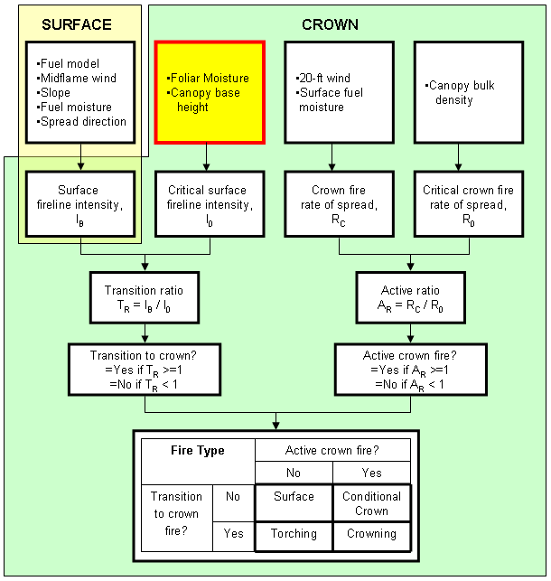

|
Foliar Moisture |
Foliar moisture content is the moisture content of the overstory foliage, the conifer needles. It is used along with surface fire intensity and crown base height to determine the threshold for transition to crown fire.
Given the empirical nature of Van Wagner's (1977) crown fire initiation model, applying foliar moisture content values less than 70% is not recommended.
If better data do not exist, a value of 100% is a reasonable estimate (Scott and Reinhardt 2001).
A wide range of values is allowed for examination of model sensitivity.
I/O |
Module |
If |
Notes |
| Input | CROWN | ||
| Output | None |
|  |